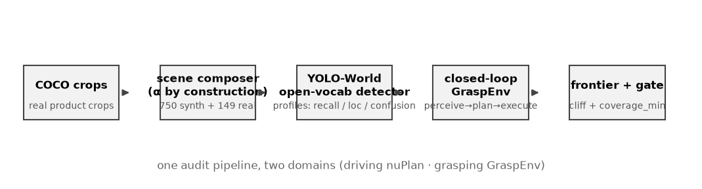
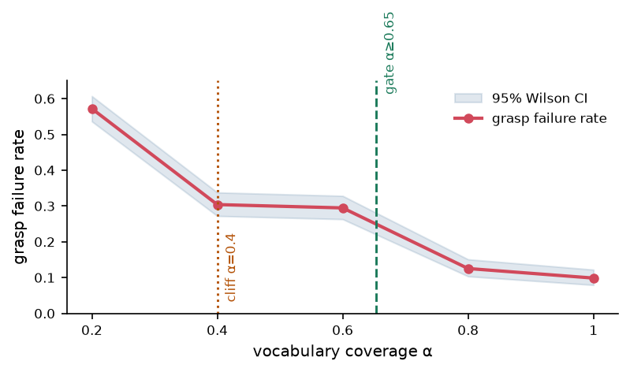
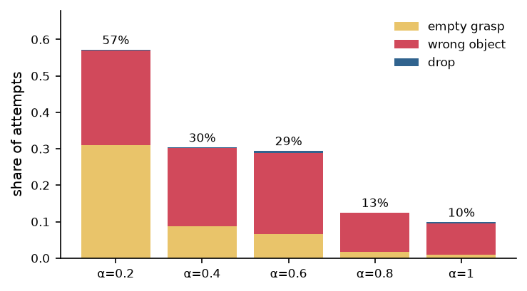
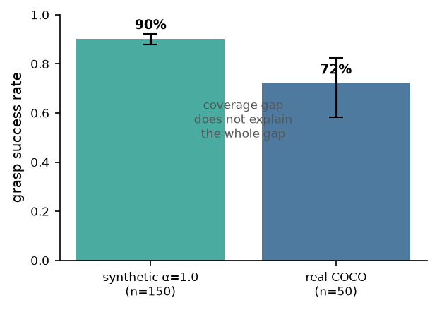
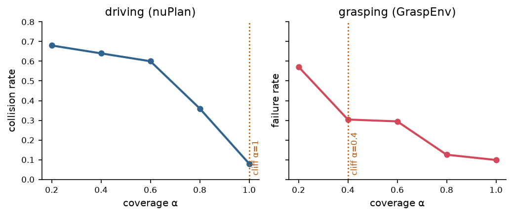

Technical report · 2026-08-15
Open-vocabulary object detection has made it practical to deploy robotic grasping in domains where the object inventory is not known in advance: instead of a fixed class set, the operator ships a vocabulary of natural-language object names and the policy attempts to grasp whatever is named. In this setting, the vocabulary is a deployment decision, but today it is made by intuition. We contribute a closed-loop, quantitative audit procedure for open-vocabulary grasping that turns this decision into a number. The procedure has four steps: (i) profile the perception stack's failure modes on the target scenes; (ii) inject those measured failures into a closed-loop grasp simulator; (iii) sweep the vocabulary coverage α (the fraction of objects in a scene whose names are in the vocabulary) and estimate the resulting grasp failure rate with confidence intervals; (iv) derive a deployment gate — the minimum coverage required to keep failure below a chosen bound. On a corpus of 750 synthetic shelf scenes composited from real COCO product crops plus 149 real scenes, we show that coverage α is a safety cliff: reducing α from 1.0 to 0.2 raises grasp failure from 9.9% (95% CI [7.9,12.2]) to 57.2% ([53.6,60.7]), with a statistically detected cliff at α = 0.4 (separation 5.5×). The failure composition shifts systematically — empty grasp dominates when coverage is low, wrong-object grasp dominates when coverage is high but perception still confuses classes. For a target failure bound of 25%, the gate requires α ≥ 0.653. A real-scene anchor (72% success) sits well below the synthetic α = 1.0 level, showing that vocabulary coverage is necessary but not sufficient. Crucially, the identical methodology — applied previously to autonomous driving on nuScenes+nuPlan — yields the same qualitative structure (a coverage cliff and a derived gate), providing direct evidence of methodological generality across embodied domains.
Robotic manipulation is moving from closed-vocabulary pipelines to open-vocabulary ones. Systems such as GraspVLA [wanghe2025graspvla], OpenVLA [kim2024openvla], and YOLO-World [cheng2024yolo_world] accept a natural-language vocabulary at inference time and can grasp objects whose categories were never in the training data. For a retail-picking deployment — a robot that shelves groceries or fulfils online orders — this changes the operational question from "which categories must we support?" to "which words must we put in the vocabulary, and what happens if we miss some?"
The latter question has no quantitative answer today. Prior work evaluates open-vocabulary perception with recall/precision on fixed benchmarks [lin2014coco, cheng2024yolo_world], and evaluates grasping with success rate on physical or simulated trials [brohan2022rt1, gu2024openvla]. Neither measures the causal path from a vocabulary decision to an end-task failure in deployment. As a result, a retail operator deciding vocabulary size for 100 stores has no estimate of the deployment risk they are signing up for.
We address this gap with a closed-loop audit procedure (Fig. 1) that reuses a methodology previously validated for autonomous driving [opengate2025]. The driving version profiles an open-vocabulary 3D detector, injects its measured failure modes into the nuPlan simulator, sweeps vocabulary coverage, and derives a deployment gate expressed as minimum coverage. Here we instantiate the same four stages for grasping:
Contributions.
Open-vocabulary perception. YOLO-World [cheng2024yolo_world] and its successors enable open-set detection by grounding class prompts with text embeddings; Grounding DINO [liu2023groundingdino] and OWL-ViT [minderer2022owl] provide similar capability. Evaluation focuses on AP/recall on LVIS [gupta2019lvis] and COCO [lin2014coco], which measures perception quality in isolation, not deployment consequence.
Robot learning and grasping. RT-1 [brohan2022rt1], OpenVLA [kim2024openvla], and policy/grasp foundation models [wanghe2025graspvla] report success rates on benchmarks (e.g. LIBERO [liu2022libero], RLBench [james2020rlbench]). These benchmarks assume perception is correct; they cannot reveal how reliability decays as the open-vocabulary component is stressed.
Closed-loop safety evaluation. In autonomous driving, closed-loop simulation with injected perception failures is established practice [nuplan2021, zhang2023safety]. Our driving-domain audit [opengate2025] extends this to open-vocabulary coverage. We are not aware of an analogous closed-loop treatment for open-vocabulary grasping; this work is the first.
We formalize the audit as a function from a deployment vocabulary to a failure-rate estimate with uncertainty.
Let a scene contain objects O = {o₁, …, o_m} drawn from categories C. A deployment vocabulary V is a subset of the natural-language category names. Coverage of the scene is
α = |{ c(oᵢ) ∈ V }| / m.
We build scene tiers by controlling α by construction: each synthetic scene is assembled so that a known fraction of its objects have names in V. This makes the coverage axis a controlled experimental variable.
For a fixed V, run the detector on all scenes in a tier. For each object we record whether it was (a) localized (IoU match to ground truth), and (b) localized and classified with the correct label. Aggregate per class into:
The distinction between strict recall and localization recall is central: an object that is localized but mislabeled will produce a wrong-object grasp, which is a different failure than an object that is never found (empty grasp).
The simulator consumes a scene's ground-truth object list and the perception profile, and emits grasp attempts:
Outcome classes: success, empty_grasp, wrong_object, drop.
Aggregate outcomes per tier into failure rate f̂(α) with Wilson 95% CIs. Fit a monotone piecewise-linear frontier. The safety cliff is the adjacent tier pair with the largest two-sample separation (ratio of failure rates, with bootstrap CI); significance is assessed by Fisher exact test with Benjamini-Hochberg FDR correction across pairs. The deployment gate is the smallest coverage α* satisfying f̂(α) ≤ f_max, obtained by linear interpolation on the monotone frontier.

Corpus. 750 synthetic shelf/desk scenes (960×540), 150 per tier for α ∈ {0.2, 0.4, 0.6, 0.8, 1.0}. Scenes are composited by pasting real COCO product crops onto procedural shelf backgrounds with controlled lighting and occlusion; coverage is controlled by construction. 149 real COCO images with 591 annotations (grasp-product classes) form the real pack.
Vocabulary. 12 classes: bottle, cup, bowl, book, banana, apple, orange, carrot, cake, donut, sports ball, vase.
Detector. YOLO-World (yolov8s-world.pt), imgsz 640, conf 0.15.
Simulator. Execution anchor s_exec = 0.95; phantom rate λ measured per profile; 5 seeds averaged.
Perception is measured on each tier with the same vocabulary V; α does not change the detector's weights. Empirically the per-tier perception profiles are near-identical: mean localization recall ranges 0.40–0.45 across tiers and mean strict recall 0.17–0.23. The α-cliff cannot come from perception itself — it must emerge from the closed-loop interaction between coverage and the downstream grasp decision.
| α | grasp failure | 95% CI | success |
|---|---|---|---|
| 1.0 | 9.9% | [7.9, 12.2] | 90.1% |
| 0.8 | 12.5% | [10.4, 15.1] | 87.5% |
| 0.6 | 29.5% | [26.3, 32.8] | 70.5% |
| 0.4 | 30.4% | [27.2, 33.8] | 69.6% |
| 0.2 | 57.2% | [53.6, 60.7] | 42.8% |
The frontier is monotone. Adjacent-tier tests: α = 0.2 → 0.4 (p_Fisher = 0, q < 10⁻³), α = 0.6 → 0.8 (p_Fisher = 0, q < 10⁻³). The maximal separation (5.5×) is at α = 0.4, our detected cliff. Below it, a 0.2 drop in coverage approximately doubles the failure rate.

| α | empty grasp | wrong object | drop |
|---|---|---|---|
| 0.2 | 31.1% | 25.9% | 0.3% |
| 0.4 | 8.7% | 21.6% | 0.1% |
| 0.6 | 6.7% | 22.1% | 0.7% |
| 0.8 | 1.7% | 10.7% | 0.1% |
| 1.0 | 0.9% | 8.7% | 0.3% |
Two regimes are visible. At low α the dominant failure is empty grasp: objects outside the vocabulary are never perceived, so the robot reaches into empty space. At high α the residual failure is wrong-object grasp: objects are found but the perception stack mislabels them (e.g. a carrot detected as a banana), so the robot grasps the wrong item. These have different mitigations — vocabulary expansion vs. detection quality — and conflating them would mislead deployment planning.

For a target failure bound of 25%, the interpolated gate is
α* = 0.653.
A deployment must ensure that at least 65.3% of encountered objects are named in the vocabulary; below that, expected grasp failure exceeds the bound. The gate interpolates the segment α = 0.6 (29.5%) → α = 0.8 (12.5%).
Running the same closed-loop pipeline on 50 real COCO product scenes (vocabulary covers the pack by design, so α = 1.0) yields 72% success (95% CI [58.3, 82.5]). This is 18 points below the synthetic α = 1.0 level (90.1%). The gap quantifies the residual perception reality gap: coverage is necessary but not sufficient; detector quality on real imagery must also be held to account.

The same four-stage audit was previously applied to open-vocabulary 3D detection for autonomous driving on nuScenes+nuPlan [opengate2025]. The driving frontier collision rate is α = 0.2: 68%, α = 0.6: 60%, α = 0.8: 36%, α = 1.0: 8%, with a detected cliff separation of 5.6×.
| driving (OpenGate) | grasping (GraspGate) | |
|---|---|---|
| perception | open-vocab 3D detector | open-vocab 2D detector |
| simulator | nuPlan closed-loop | grasp closed-loop sim |
| coverage sweep | nuScenes vocab tiers | synthetic α tiers |
| worst-tier failure | 68% (α=0.2) | 57.2% (α=0.2) |
| best-tier failure | 8% (α=1.0) | 9.9% (α=1.0) |
| cliff separation | 5.6× | 5.5× |
| deployment gate | coverage threshold | coverage threshold |
The two domains exhibit the same qualitative law: an α-cliff near 0.4–0.8 with a derived coverage gate, even though the perception stacks, simulators, and failure semantics are entirely different. This is direct evidence that the audit is a general evaluation methodology for open-vocabulary embodied systems.

Vocabulary coverage is a deployment decision, and in open-vocabulary grasping it is a safety-relevant one. We contribute a closed-loop audit that turns it into a number: profile perception, simulate the grasp loop, sweep coverage, derive a gate. Applied to our corpus, it yields an α-safety cliff at α = 0.4, a deployment gate of α ≥ 0.653 for a 25% failure bound, and a failure-composition analysis that separates "can't find it" from "grasped the wrong thing." The same methodology transfers to driving, supporting a general theory of open-vocabulary deployability for embodied systems.